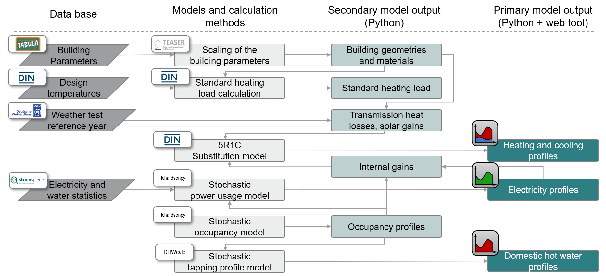

DistrictGenerator


Through the DistrictGenerator, we introduce an python-based open-source tool aimed at urban planners, energy suppliers, housing associations, engineering firms, architectural professionals, as well as academic and research institutions. This tool furnishes crucial insights into energy demands, pivotal for the effective design and operation of neighborhoods energy systems. Consequently, users can discern actionable measures to harmonize energy supply. The DistrictGenerator offers a pioneering approach by mapping entire urban building stocks in neighborhood models for automated load profile calculations and dimensioning of distributed energy resources. By integrating several open-source data bases and tools like TEASER and richardsonpy.
The DistrictGenerator is being developed at RWTH Aachen University, E.ON Energy Research Center, Institute for Energy Efficient Buildings and Indoor Climate.
General Motivation
In the early stages of neighborhood planning, crucial data such as demand profiles of electricity, heating, domestic hot water, and occupancy profiles are often not available. The absence of this data hampers accurate evaluations of energy systems in districts. The DistrictGenerator seeks to advance the applicability of sustainable, cross-sectoral energy systems in neighborhoods, with a specific emphasis on exploiting synergy potentials among buildings of diverse usage structures through integrated concepts. We summarize the key contributions of the DistrictGenerator as follows:
An open-source tool with minimal input requirements. Leveraging pre-set elements and default values of temporally resolved demand profiles, as well as decentralized heat generator sizing conforming to DIN standards.
The tool enables the bottom-up representation of entire urban structures through neighborhood models, affording a sufficiently detailed analysis foundation.
Facilitation of central operational optimization and presentation of analytical results and key performance indicators. This supports the examination of various neighborhood types and supply scenarios concerning technology selection and penetrations. We thereby create a platform for early-stage comparison of neighborhood concepts with the flexibility of selecting different variants, given the tool’s rapid recalculations.
Getting started
Install the DistrictGenerator
To install, first clone this repository with
git clone https://github.com/RWTH-EBC/districtgenerator
and secondly run:
pip install -e districtgenerator
Once you have installed the DistrictGenerator, you can check the examples to learn how to use the different components.
Minimum manual required input data
To generate your district, you need to know some information about its buildings. The minimal input data set was defined following the TABULA archetype approach:
id: building ID (just numerate the buildings)
building: residential building type (single family house, terraced house, multi family house or apartment block)
year: construction year (the calendar year in which the building was constructed)
retrofit: retrofit state according to TABULA (0: existing state, 1: usual refurbishment, 2: advanced refurbishment)
area: reference floor area (given in square meters)
The example.csv file can be used as template.
Additional input data
In the folder data further data can be found. Default values are already stored there. Optionally, the following data can be changed to:
design_building_data.json: Maximum and minimum indoor temperature and the room ventilation rate
site_data.json: Test referece year and its conditions,
time_data.json: The time resolution of the profiles
The data in the following files must not be changed because they are fixed parameters and external data:
design_weather_data.json: Contains the 16 German climate zones of the DWD. Climate zones are large areas in which the main characteristics of the climate are the same. Each zone is represented by a city.
physics_data.json
dhw_stochstical.xlsx
The weather data can be found in weather.
Structure of the DistrictGenerator

Workflow of the DistrictGenerator
The district generator integrates multiple open-source tools and databases. The figure below visualizes the dependencies of external tools and data with internal functions. The user input for the parameterization of a neighborhood consists of a minimum of data. First, the user enters the number of buildings and basic information about each building, namely the building type, year of construction, retrofit level, and net floor area. The number of buildings to be calculated is not limited by the program. Optionally, the site of the district, the time resolution of the profiles and the test reference year (TRY) for weather data can be modified.

To obtain a fully parameterized building model, the TEASER tool performs a data enrichment with data from the TABULA WebTool that provides statistical and normative information about the building stock. Finally, the TEASER python package determines the geometry and material properties of the buildings. As the TABULA WebTool defines archetypal building properties for type, age class and retrofit level, the generated districts are composed of representative buildings, making them ideal for representative analyses or scalability studies. The number of occupants within a dwelling is randomly determined, but within defined limits (1 to 4 occupants for each flat in multi-family houses and apartment block, 2-5 occupants in single-family houses and terraced houses), and serves as input data for the richardsonpy tool to calculate stochastically the time-resolved occupancy profiles. Furthermore, the Stromspiegel provides statistical data on annual electricity consumption in German dwellings. Annual consumption is assigned to each dwelling with a possible standard deviation of 10%, upon which the time-resolved electricity profile is created using the stochastic profile generator richardsonpy again. The electricity and occupancy profiles serve as input for a time-resolved internal gain calculation. Additionally, the occupancy profiles are needed for domestic hot water profile generation, for which functions from the pyCity tool are utilized. Finally, the static building data, as well as the time-resolved weather and internal gain data, are included in the space heating profile generation. These are computed by means of a 5R1C-substitution model according to DIN EN ISO 13790:2008-09 using the simplified hourly method.
Final output of the DistrictGenerator
Including all these tools the DistrictGenerator gives as output time-resolved demand profiles as csv. file for each building in the neighborhood. The output contains:
heat: space heating demand
dhw: domestic hot water demand
elec: electricity demand for lighting and electric household devices
gains: internal gains from persons, lighting and electric household devices
occ: occupancy profile
All csv files are finally saved in the demands folder. The unit of the demand profiles is watt.
Running examples for functional testing
Once you have installed the DistrictGenerator, you can check the examples to learn how to use the different components.
To test the tool’s executability, run test_examples.py in the tests folder. This functional testing checks the entire chain of the tool, from data input and initialization to the output of the calculated profiles. It does not correspond to a test of the functional units of the entire process. This functional testing is based on the examples automatically executed one after another.
How to contribute
The documentation and examples should be understandable and the code bug-free. As all users have different backgrounds, you may not understand everything or encounter bugs. If you have questions, want to contribute new features or fix bugs yourself, please raise an issue here.
If you wrote a new feature, create a pull request and assign a reviewer before merging. Once review is finished, you can merge.
Alumni
Sarah Henn
Reference
We presented or applied the library in the following publications:
J. Schölzel, S. Henn, R. Streblow, D. Müller. Evaluation of Energy Sharing on a Local Energy Market Through Comparison of Energy Management Techniques. 36th International Conference on Efficiency, Cost, Optimization, Simulation and Environmental Impact of Energy Systems. https://doi.org/10.52202/069564-0307
J. Schölzel, T. Beckhölter, S. Henn, C.Wüller, R. Streblow, D. Müller. Districtgenerator: A Novel Open-Source Webtool to Generate Building-Specific Load Profiles and Evaluate Energy Systems of Residential Districts. 37th International Conference on Efficiency, Cost, Optimization, Simulation and Environmental Impact of Energy Systems.
C. Wüller, J. Schölzel, R. Streblow, D. Müller. Optimizing Local Energy Trading in Residential Neighborhoods:A Price Signal Approach in Local Energy Markets. 37th International Conference on Efficiency, Cost, Optimization, Simulation and Environmental Impact of Energy Systems.
License
The DistrictGenerator is released by RWTH Aachen University, E.ON Energy Research Center, Institute for Energy Efficient Buildings and Indoor Climate, under the MIT License.
Acknowledgements
The districtgenerator has been developed within the public funded project “BF2020 Begleitforschung ENERGIEWENDEBAUEN - Modul Quartiere” (promotional reference: 03EWB003B) and with financial support by BMWK (German Federal Ministry for Economic Affairs and Climate Action).